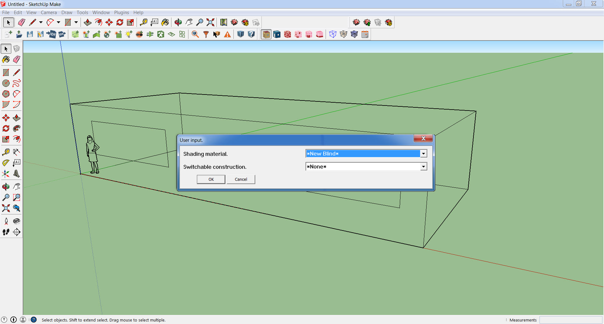
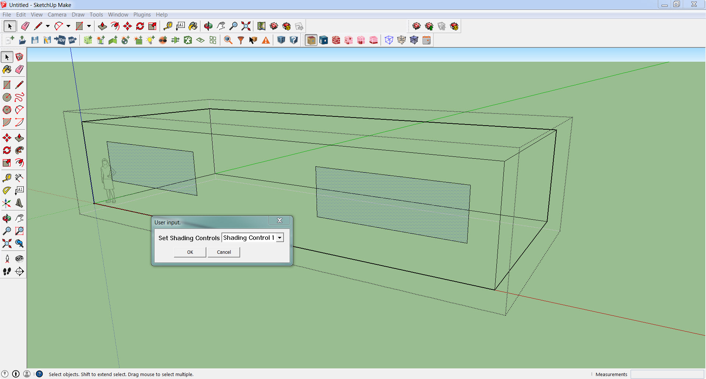
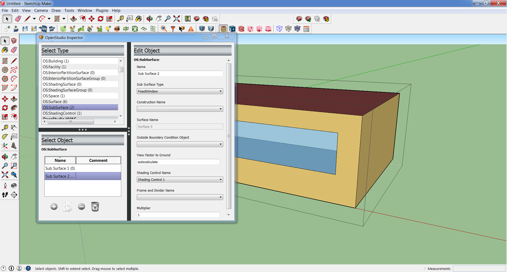
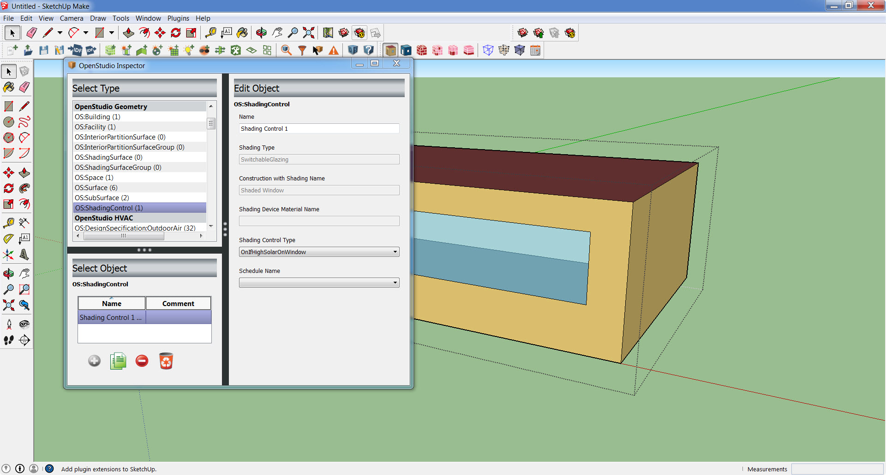

Shading Controls
This tutorial explains how to add shading controls to an OpenStudio model to study the impact of blinds, shades, switchable glazing, or other shading controls.
Create Shading Controls
Create a model with fenestration. Apply a fenestration construction which represents the unshaded state to your windows. Create either a fenestration construction representing the shaded state or a shading material such as a blind, screen, or shade. If you choose a shading material it will be added to the unshaded construction when the window is in the shaded state. Run the "Add Shading Controls" user script to create a shading control object.

Choose either your shaded construction or shading material, you cannot choose both.

Apply Shading Controls
Select the windows that you want to apply the shading controls to. This can be done individually or by using the surface search feature. Run the "Apply Shading Controls" user script to apply a shading control object to the selected windows.

Edit Shading Controls
Edit details related to the shading control object (e.g. control algorithm) using the OpenStudio inspector.

You can also assign shading control objects to individual surfaces using the OpenStudio inspector.
